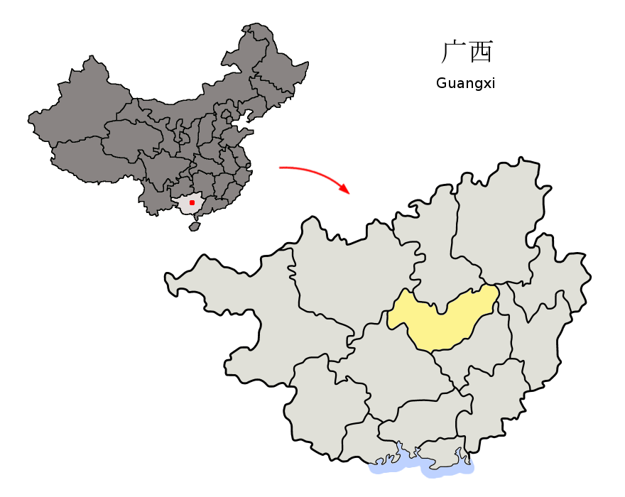

来宾市（壮文：Laizbinh）是中华人民共和国广西壮族自治区下辖的地级市，位于广西壮族自治区中部，故有“桂中腹地”之称。。市境西南接南宁市，西北邻河池市，北界柳州市，东北连桂林市、梧州市，东南毗贵港市。地处桂中盆地低山丘陵区，地势东西高，中间低，东部为大瑶山。红水河穿越市区，在市境中部与柳江汇合成黔江。全市总面积13,382平方公里，人口218.2万，壮族人口比例超过七成，市人民政府驻兴宾区。湘桂铁路穿过境内。

来宾北站（Laibinbei Railway Station）位于中国广西壮族自治区来宾市，是中国铁路南宁局集团有限公司管辖的一座铁路车站，也是柳南城际铁路的中间站。来宾北站于2013年4月正式动工；2013年12月，来宾北站站房主体工程完工；2014年7月20日，来宾北站正式运营。截至2013年7月，来宾北站站房建筑面积12000平方米；站场规模为3台7线，设计最高聚集人数为1200人。
 回顶部
回顶部